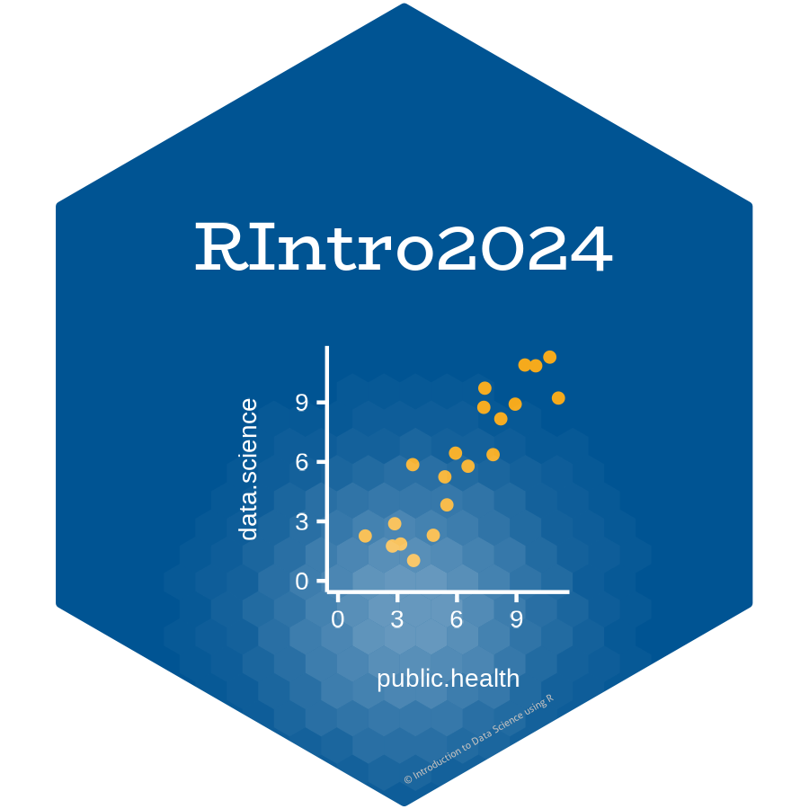

class: center, middle, inverse, title-slide .title[ # Exploring Data with R ] .subtitle[ ## Day 2: RIntro2024 ] .author[ ###  <br> Dr. Arun Mitra ] .institute[ ### Introduction to Health Data Science using R ] --- class: center middle # Important!!! R is Case Sensitive. .center[] --- class: inverse middle # Outline of the talk - What is EDA? - Generate questions about your data. - Search for answers by visualising, transforming your data. - Live Demo Session --- # What is EDA? ### Exploratory Data Analysis .pull-left[ - **EDA** is the critical first step. - **EDA** is a state of mind. - **EDA** is exploring your ideas. - **EDA** has no strict rules. - **EDA** helps understand your data. - **EDA** is an iterative cycle. - **EDA** is a creative process. ] .pull-right[  ] --- class: middle # What is EDA? It is mostly a **philosophy** of data analysis where the researcher examines the data without any pre-conceived ideas in order to discover what the data can tell him or her about the phenomena being studied. .left[*"detective work – numerical detective work – or counting detective work – or graphical detective work"*] .right[— **Tukey, 1977** *Page 1, Exploratory Data Analysis*] --- # Questions ### The easiest way to do **EDA** is to use questions as tools to guide your investigation. ### **EDA** is an important part of any data analysis, even if the questions are known already. .left[*"There are no routine statistical questions, only questionable statistical routines."*] .right[— **Sir David Cox**] .left[*"Far better an approximate answer to the right question, which is often vague, than an exact answer to the wrong question, which can always be made precise."*] .right[— **John Tukey**] --- class: middle # Asking the right questions Key to asking **_quality_** questions is to generate a large **_quantity_** of questions. It is difficult to ask revealing questions at the start of the analysis. But, each new question will expose a new aspect and increase your chance of making a discovery. ### Questions to ask: - What type of variation occurs within your variables? - What type of covariation occurs between your variables? - Whether your data meets your expectations or not. - Whether the quality of your data is robust or not. --- # The process of EDA - **Iterative** .center[] 1. Import 2. Tidy 3. Explore - Transform - Visualize - Transform - Visualise ... - ... --- class: inverse # What did we cover till now? ### Concepts - Health Data Science - Reproducible Research - Tidy Data ### How to Visualize Data - `ggplot2` ### How to Import Data - `rio::import()` - `here::here()` --- class: middle # What will be covered now? ### Preparing Tidy Data - Data Cleaning - Data Wrangling ### Data Exploration - Data Transformation - Data Visualization --- class: middle # Before we get started ### To recap what we learnt in the previous sessions.. - We now know to work within the R Project environment. - `here::here()` makes it easy for us to manage file paths. - You can quickly have a look at your data using the `View()` and `glimpse()` functions. - Most of the tidy data is read as `tibble` which is a workhorse of `tidyverse`. --- # Getting Started with the Data Exploration Pipeline ## Step Zero: Get your documents and data in place. ### - Today we will be working in a Quarto Document (`.qmd`). ### - Quarto interweaves prose with code. ### - Please download the `.qmd` file provided to you via email and place it in the `reports` folder of your working directory. --- ## `dplyr` Package .left-column[ The `dplyr` is a powerful R-package to manipulate, clean and summarize unstructured data. In short, it makes data exploration and data manipulation easy and fast in R. ] .right-column[  ] --- # Verbs of the `dplyr` .left-column[ There are many verbs in `dplyr` that are useful. ] .right-column[ .center[] ] --- # Syntax of the `dplyr` verbs  --- # Getting used to the pipe ( `|>` ) operator .left-column[ - The pipe `|>` means **THEN**... - The pipe is an operator in R that allows you to chain together functions in `dplyr`. ] .right-column[  ] --- ## Lets load some sample data .pull-left[ ```r library(tidyverse) library(here) library(rio) filepath <- here('data', "who_tubercolosis_data.csv") tb <- filepath |> import(setclass = 'tibble') tb ``` ] .pull-right[ ``` ## # A tibble: 3,850 × 18 ## country who_region year pop incidence_100k incidence_number hiv_percent ## <chr> <chr> <int> <int> <dbl> <int> <dbl> ## 1 Afghanis… EMR 2000 2.01e7 190 38000 0.36 ## 2 Afghanis… EMR 2001 2.10e7 189 40000 0.3 ## 3 Afghanis… EMR 2002 2.20e7 189 42000 0.26 ## 4 Afghanis… EMR 2003 2.31e7 189 44000 0.23 ## 5 Afghanis… EMR 2004 2.41e7 189 46000 0.22 ## 6 Afghanis… EMR 2005 2.51e7 189 47000 0.22 ## 7 Afghanis… EMR 2006 2.59e7 189 49000 0.22 ## 8 Afghanis… EMR 2007 2.66e7 189 50000 0.23 ## 9 Afghanis… EMR 2008 2.73e7 189 52000 0.23 ## 10 Afghanis… EMR 2009 2.80e7 189 53000 0.24 ## # ℹ 3,840 more rows ## # ℹ 11 more variables: hiv_incidence_100k <dbl>, hiv_number <int>, ## # mort_nohiv_100k <dbl>, mort_nohiv_number <int>, mort_hiv_100k <dbl>, ## # mort_hiv_number <int>, mort_100k <dbl>, mort_number <int>, ## # case_fatality_ratio <dbl>, new_incidence_100k <dbl>, ## # case_detection_percent <dbl> ``` ] --- .left-column[ ```r tb |> glimpse() ``` ] .right-column[ ``` ## Rows: 3,850 ## Columns: 18 ## $ country <chr> "Afghanistan", "Afghanistan", "Afghanistan", "A… ## $ who_region <chr> "EMR", "EMR", "EMR", "EMR", "EMR", "EMR", "EMR"… ## $ year <int> 2000, 2001, 2002, 2003, 2004, 2005, 2006, 2007,… ## $ pop <int> 20093756, 20966463, 21979923, 23064851, 2411897… ## $ incidence_100k <dbl> 190, 189, 189, 189, 189, 189, 189, 189, 189, 18… ## $ incidence_number <int> 38000, 40000, 42000, 44000, 46000, 47000, 49000… ## $ hiv_percent <dbl> 0.36, 0.30, 0.26, 0.23, 0.22, 0.22, 0.22, 0.23,… ## $ hiv_incidence_100k <dbl> 0.68, 0.57, 0.49, 0.44, 0.41, 0.42, 0.42, 0.43,… ## $ hiv_number <int> 140, 120, 110, 100, 100, 100, 110, 120, 120, 13… ## $ mort_nohiv_100k <dbl> 67.00, 62.00, 56.00, 57.00, 51.00, 46.00, 42.00… ## $ mort_nohiv_number <int> 14000, 13000, 12000, 13000, 12000, 12000, 11000… ## $ mort_hiv_100k <dbl> 0.15, 0.17, 0.27, 0.25, 0.21, 0.19, 0.18, 0.17,… ## $ mort_hiv_number <int> 31, 35, 60, 57, 50, 48, 46, 45, 48, 55, 56, 61,… ## $ mort_100k <dbl> 67.00, 62.00, 56.00, 57.00, 51.00, 46.00, 42.00… ## $ mort_number <int> 14000, 13000, 12000, 13000, 12000, 12000, 11000… ## $ case_fatality_ratio <dbl> NA, NA, NA, NA, NA, NA, NA, NA, NA, NA, NA, NA,… ## $ new_incidence_100k <dbl> 35, 48, 63, 60, 76, 87, 98, 108, 104, 93, 97, 9… ## $ case_detection_percent <dbl> 19, 26, 33, 32, 40, 46, 52, 57, 55, 49, 51, 50,… ``` ] --- # Let's look at the `head()` .left-column[ ```r head(tb) ``` ] .right-column[ ``` ## # A tibble: 6 × 18 ## country who_region year pop incidence_100k incidence_number hiv_percent ## <chr> <chr> <int> <int> <dbl> <int> <dbl> ## 1 Afghanist… EMR 2000 2.01e7 190 38000 0.36 ## 2 Afghanist… EMR 2001 2.10e7 189 40000 0.3 ## 3 Afghanist… EMR 2002 2.20e7 189 42000 0.26 ## 4 Afghanist… EMR 2003 2.31e7 189 44000 0.23 ## 5 Afghanist… EMR 2004 2.41e7 189 46000 0.22 ## 6 Afghanist… EMR 2005 2.51e7 189 47000 0.22 ## # ℹ 11 more variables: hiv_incidence_100k <dbl>, hiv_number <int>, ## # mort_nohiv_100k <dbl>, mort_nohiv_number <int>, mort_hiv_100k <dbl>, ## # mort_hiv_number <int>, mort_100k <dbl>, mort_number <int>, ## # case_fatality_ratio <dbl>, new_incidence_100k <dbl>, ## # case_detection_percent <dbl> ``` ] --- # Let's look at the `names()` .left-column[ ```r dim(tb) names(tb) ``` ] .right-column[ ``` ## [1] 3850 18 ``` ``` ## [1] "country" "who_region" "year" ## [4] "pop" "incidence_100k" "incidence_number" ## [7] "hiv_percent" "hiv_incidence_100k" "hiv_number" ## [10] "mort_nohiv_100k" "mort_nohiv_number" "mort_hiv_100k" ## [13] "mort_hiv_number" "mort_100k" "mort_number" ## [16] "case_fatality_ratio" "new_incidence_100k" "case_detection_percent" ``` ] --- ## Let's look at the different countries ### Find the unique countries in the bottom 50 rows of tb. .pull-left[ ```r # without the pipe unique(tail(tb, n = 50)$country) # with the pipe tb %>% tail(50) %>% distinct(country) ``` ] .pull-right[ ``` ## [1] "Yemen" "Zambia" "Zimbabwe" ``` ``` ## # A tibble: 3 × 1 ## country ## <chr> ## 1 Yemen ## 2 Zambia ## 3 Zimbabwe ``` ] --- class: middle ## `distinct()` and `count()` The `distinct()` function will return the distinct values of a column, while `count()` provides both the distinct values of a column and then number of times each value shows up. .pull-left[ ```r tb %>% distinct(who_region) ``` ``` ## # A tibble: 6 × 1 ## who_region ## <chr> ## 1 EMR ## 2 EUR ## 3 AFR ## 4 WPR ## 5 AMR ## 6 SEA ``` ] .pull-right[ ```r tb %>% count(who_region) ``` ``` ## # A tibble: 6 × 2 ## who_region n ## <chr> <int> ## 1 AFR 835 ## 2 AMR 808 ## 3 EMR 396 ## 4 EUR 967 ## 5 SEA 196 ## 6 WPR 648 ``` ] Notice that there is a new column produced by the count function called `n`. --- class:middle ## `arrange()` The `arrange()` function does what it sounds like. It takes a data frame or tbl and arranges (or sorts) by column(s) of interest. The first argument is the data, and subsequent arguments are columns to sort on. Use the `desc()` function to arrange by descending. .pull-left[ ```r tb %>% count(who_region) %>% arrange(n) ``` ``` ## # A tibble: 6 × 2 ## who_region n ## <chr> <int> ## 1 SEA 196 ## 2 EMR 396 ## 3 WPR 648 ## 4 AMR 808 ## 5 AFR 835 ## 6 EUR 967 ``` ] .pull-right[ ```r tb %>% count(who_region) %>% arrange(-n) # use can also use arrange(desc(n)) ``` ``` ## # A tibble: 6 × 2 ## who_region n ## <chr> <int> ## 1 EUR 967 ## 2 AFR 835 ## 3 AMR 808 ## 4 WPR 648 ## 5 EMR 396 ## 6 SEA 196 ``` ] ## `filter()` If you want to return **rows** of the data where some criteria are met, use the `filter()` function. This is how we subset in the tidyverse. (Base R function is `subset()`)  --- ## Logical Operators in R .pull-left[ If you want to satisfy *all* of multiple conditions, you can use the "and" operator, `&`. The "or" operator `|` (the vertical pipe character, shift-backslash) will return a subset that meet *any* of the conditions. ] .pull-right[  ] --- class: middle ## Filter 2015 and above ```r tb %>% filter(year >= 2015) ``` ``` ## # A tibble: 648 × 18 ## country who_region year pop incidence_100k incidence_number hiv_percent ## <chr> <chr> <int> <int> <dbl> <int> <dbl> ## 1 Afghanis… EMR 2015 3.37e7 189 64000 0.3 ## 2 Afghanis… EMR 2016 3.47e7 189 65000 0.31 ## 3 Afghanis… EMR 2017 3.55e7 189 67000 0.31 ## 4 Albania EUR 2015 2.92e6 16 480 0.82 ## 5 Albania EUR 2016 2.93e6 16 480 0.83 ## 6 Albania EUR 2017 2.93e6 20 580 0.85 ## 7 Algeria AFR 2015 3.99e7 74 30000 0.58 ## 8 Algeria AFR 2016 4.06e7 70 29000 0.6 ## 9 Algeria AFR 2017 4.13e7 70 29000 0.62 ## 10 American… WPR 2015 5.55e4 8.3 5 0.1 ## # ℹ 638 more rows ## # ℹ 11 more variables: hiv_incidence_100k <dbl>, hiv_number <int>, ## # mort_nohiv_100k <dbl>, mort_nohiv_number <int>, mort_hiv_100k <dbl>, ## # mort_hiv_number <int>, mort_100k <dbl>, mort_number <int>, ## # case_fatality_ratio <dbl>, new_incidence_100k <dbl>, ## # case_detection_percent <dbl> ``` --- class: middle ## Filter India ```r tb %>% filter(country == "India") ``` ``` ## # A tibble: 18 × 18 ## country who_region year pop incidence_100k incidence_number hiv_percent ## <chr> <chr> <int> <int> <dbl> <int> <dbl> ## 1 India SEA 2000 1.05e9 289 3040000 7 ## 2 India SEA 2001 1.07e9 288 3090000 7 ## 3 India SEA 2002 1.09e9 287 3130000 7 ## 4 India SEA 2003 1.11e9 285 3160000 7 ## 5 India SEA 2004 1.13e9 282 3180000 7 ## 6 India SEA 2005 1.14e9 279 3190000 7 ## 7 India SEA 2006 1.16e9 274 3180000 7 ## 8 India SEA 2007 1.18e9 268 3160000 7 ## 9 India SEA 2008 1.20e9 261 3130000 6.8 ## 10 India SEA 2009 1.21e9 254 3090000 6.6 ## 11 India SEA 2010 1.23e9 247 3050000 6.3 ## 12 India SEA 2011 1.25e9 241 3000000 5.9 ## 13 India SEA 2012 1.26e9 234 2960000 5.4 ## 14 India SEA 2013 1.28e9 228 2920000 4.9 ## 15 India SEA 2014 1.29e9 223 2880000 4.3 ## 16 India SEA 2015 1.31e9 217 2840000 4 ## 17 India SEA 2016 1.32e9 211 2790000 3.3 ## 18 India SEA 2017 1.34e9 204 2740000 3.1 ## # ℹ 11 more variables: hiv_incidence_100k <dbl>, hiv_number <int>, ## # mort_nohiv_100k <dbl>, mort_nohiv_number <int>, mort_hiv_100k <dbl>, ## # mort_hiv_number <int>, mort_100k <dbl>, mort_number <int>, ## # case_fatality_ratio <dbl>, new_incidence_100k <dbl>, ## # case_detection_percent <dbl> ``` --- # Both India and 2015 or more recent ```r tb %>% filter(year >= 2015 & country == "India") ``` ``` ## # A tibble: 3 × 18 ## country who_region year pop incidence_100k incidence_number hiv_percent ## <chr> <chr> <int> <int> <dbl> <int> <dbl> ## 1 India SEA 2015 1.31e9 217 2840000 4 ## 2 India SEA 2016 1.32e9 211 2790000 3.3 ## 3 India SEA 2017 1.34e9 204 2740000 3.1 ## # ℹ 11 more variables: hiv_incidence_100k <dbl>, hiv_number <int>, ## # mort_nohiv_100k <dbl>, mort_nohiv_number <int>, mort_hiv_100k <dbl>, ## # mort_hiv_number <int>, mort_100k <dbl>, mort_number <int>, ## # case_fatality_ratio <dbl>, new_incidence_100k <dbl>, ## # case_detection_percent <dbl> ``` --- ## `%in%` function To `filter()` a categorical variable for only certain levels, we can use the `%in%` operator. Let's see data from India, Nepal, Pakistan and Bangladesh First we will have to figure out how those are spelled in this dataset. Open the spreadsheet viewer and find out. We'll see a way to find them in code later on in the course. --- ## Indian Subcontinent ```r indian_subcont <- c("India", "Nepal", "Pakistan", "Bangladesh", "Afghanistan") tb %>% filter(country %in% indian_subcont) %>% distinct(country) ``` ``` ## # A tibble: 5 × 1 ## country ## <chr> ## 1 Afghanistan ## 2 Bangladesh ## 3 India ## 4 Nepal ## 5 Pakistan ``` --- ## Other Useful Functions ## `drop_na()` The `drop_na()` function is extremely useful for when we need to subset a variable to remove missing values. ## `select()` Whereas the `filter()` function allows you to return only certain _rows_ matching a condition, the `select()` function returns only certain _columns_. The first argument is the data, and subsequent arguments are the columns you want. --- ## `summarize()` The `summarize()` function summarizes multiple values to a single value. On its own the `summarize()` function doesn't seem to be all that useful. The dplyr package provides a few convenience functions called `n()` and `n_distinct()` that tell you the number of observations or the number of distinct values of a particular variable. `summarize()` is the same as `summarise()` ```r tb %>% summarize(mean_hiv_percent = mean(hiv_percent, na.rm = TRUE), sd_hiv_percent = sd(hiv_percent, na.rm = TRUE)) ``` ``` ## # A tibble: 1 × 2 ## mean_hiv_percent sd_hiv_percent ## <dbl> <dbl> ## 1 12.1 17.7 ``` --- ## `group_by()` We saw that `summarize()` isn't that useful on its own. Neither is `group_by()`. All this does is takes an existing data frame and converts it into a grouped data frame where operations are performed by group. ```r tb %>% group_by(year) ``` ``` ## # A tibble: 3,850 × 18 ## # Groups: year [18] ## country who_region year pop incidence_100k incidence_number hiv_percent ## <chr> <chr> <int> <int> <dbl> <int> <dbl> ## 1 Afghanis… EMR 2000 2.01e7 190 38000 0.36 ## 2 Afghanis… EMR 2001 2.10e7 189 40000 0.3 ## 3 Afghanis… EMR 2002 2.20e7 189 42000 0.26 ## 4 Afghanis… EMR 2003 2.31e7 189 44000 0.23 ## 5 Afghanis… EMR 2004 2.41e7 189 46000 0.22 ## 6 Afghanis… EMR 2005 2.51e7 189 47000 0.22 ## 7 Afghanis… EMR 2006 2.59e7 189 49000 0.22 ## 8 Afghanis… EMR 2007 2.66e7 189 50000 0.23 ## 9 Afghanis… EMR 2008 2.73e7 189 52000 0.23 ## 10 Afghanis… EMR 2009 2.80e7 189 53000 0.24 ## # ℹ 3,840 more rows ## # ℹ 11 more variables: hiv_incidence_100k <dbl>, hiv_number <int>, ## # mort_nohiv_100k <dbl>, mort_nohiv_number <int>, mort_hiv_100k <dbl>, ## # mort_hiv_number <int>, mort_100k <dbl>, mort_number <int>, ## # case_fatality_ratio <dbl>, new_incidence_100k <dbl>, ## # case_detection_percent <dbl> ``` --- ## Two variable `group_by()` ```r tb %>% group_by(year, who_region) ``` ``` ## # A tibble: 3,850 × 18 ## # Groups: year, who_region [108] ## country who_region year pop incidence_100k incidence_number hiv_percent ## <chr> <chr> <int> <int> <dbl> <int> <dbl> ## 1 Afghanis… EMR 2000 2.01e7 190 38000 0.36 ## 2 Afghanis… EMR 2001 2.10e7 189 40000 0.3 ## 3 Afghanis… EMR 2002 2.20e7 189 42000 0.26 ## 4 Afghanis… EMR 2003 2.31e7 189 44000 0.23 ## 5 Afghanis… EMR 2004 2.41e7 189 46000 0.22 ## 6 Afghanis… EMR 2005 2.51e7 189 47000 0.22 ## 7 Afghanis… EMR 2006 2.59e7 189 49000 0.22 ## 8 Afghanis… EMR 2007 2.66e7 189 50000 0.23 ## 9 Afghanis… EMR 2008 2.73e7 189 52000 0.23 ## 10 Afghanis… EMR 2009 2.80e7 189 53000 0.24 ## # ℹ 3,840 more rows ## # ℹ 11 more variables: hiv_incidence_100k <dbl>, hiv_number <int>, ## # mort_nohiv_100k <dbl>, mort_nohiv_number <int>, mort_hiv_100k <dbl>, ## # mort_hiv_number <int>, mort_100k <dbl>, mort_number <int>, ## # case_fatality_ratio <dbl>, new_incidence_100k <dbl>, ## # case_detection_percent <dbl> ``` --- ## `group_by()` and `summarize()` together The real power comes in where `group_by()` and `summarize()` are used together. First, write the `group_by()` statement. Then pipe the result to a call to `summarize()`. ```r tb %>% group_by(year) %>% summarize(mean_inc = mean(incidence_100k, na.rm = TRUE), sd_inc = sd(incidence_100k, na.rm = TRUE)) ``` ``` ## # A tibble: 18 × 3 ## year mean_inc sd_inc ## <int> <dbl> <dbl> ## 1 2000 138. 191. ## 2 2001 138. 194. ## 3 2002 140. 195. ## 4 2003 141. 200. ## 5 2004 139. 200. ## 6 2005 137. 199. ## 7 2006 135. 198. ## 8 2007 132. 194. ## 9 2008 129. 188. ## 10 2009 127. 186. ## 11 2010 124. 182. ## 12 2011 120. 171. ## 13 2012 116. 164. ## 14 2013 113. 158. ## 15 2014 109. 152. ## 16 2015 107. 147. ## 17 2016 104. 142. ## 18 2017 101. 137. ``` --- ## `mutate()` .left-column[ Mutate creates a new variable or modifies an existing one. ] .right-column[  ] --- ## `if_else()` Lets create a column called `ind_sub` if the country is in the Indian Subcontinent. ```r tb %>% mutate(indian_sub1 = if_else(country %in% indian_subcont, "Indian Subcontinent", "Others")) %>% select(country, indian_sub1) %>% distinct() ``` ``` ## # A tibble: 218 × 2 ## country indian_sub1 ## <chr> <chr> ## 1 Afghanistan Indian Subcontinent ## 2 Albania Others ## 3 Algeria Others ## 4 American Samoa Others ## 5 Andorra Others ## 6 Angola Others ## 7 Anguilla Others ## 8 Antigua and Barbuda Others ## 9 Argentina Others ## 10 Armenia Others ## # ℹ 208 more rows ``` --- ## `case_when()` Alternative of `if_else()`  --- class: middle # `if_else()` vs `case_when()` Note that the `if_else()` function may result in slightly shorter code if you only need to code for 2 options. For more options, nested `if_else()` statements become hard to read and could result in mismatched parentheses so `case_when()` will be a more elegant solution. --- ## `join()` .pull-left[ Typically in a data science or data analysis project one would have to work with many sources of data. The researcher must be able to combine multiple datasets to answer the questions he or she is interested in. As with the other `dplyr` verbs, there are different families of verbs that are designed to work with relational data and one of the most commonly used family of verbs are the mutating joins. ] .pull-right[  ] --- ## `join()` - `left_join(x, y)` which combines all columns in data frame `x` with those in data frame `y` but only retains rows from `x`. - `right_join(x, y)` also keeps all columns but operates in the opposite direction, returning only rows from `y`. - `full_join(x, y)` combines all columns of `x` with all columns of `y` and retains all rows from both data frames. - `inner_join(x, y)` combines all columns present in either `x` or `y` but only retains rows that are present in both data frames. - `anti_join(x, y)` returns the columns from `x` only and retains rows of `x` that are not present in `y`. - `anti_join(y, x)` returns the columns from `y` only and retains rows of `y` that are not present in `x`. --- ## Visual representation of the `left_join()`  --- ## Visual representation of the `right_join()`  --- ## Visual representation of the `full_join()`  --- ## `pivot()` .left-column[ Most often, when working with our data we may have to reshape our data from long format to wide format and back. We can use the `pivot` family of functions to achieve this task. ] .right-column[  ] --- ## `pivot()`  --- # More Resources for `dplyr` - Check out the [Data Wrangling Cheatsheet](https://rstudio.com/wp-content/uploads/2015/02/data-wrangling-cheatsheet.pdf) that covers dplyr and tidyr functions. - Review the [Tibbles](https://r4ds.had.co.nz/tibbles.html) chapter of the excellent, free [**_R for Data Science_ book**](http://r4ds.had.co.nz). - Check out the [Transformations](https://r4ds.had.co.nz/transform.html) chapter to learn more about the `dplyr` package. Note that this chapter also uses the graphing package `ggplot2` which we have covered yesterday. --- class: middle center hide-logo # Lets Begin!